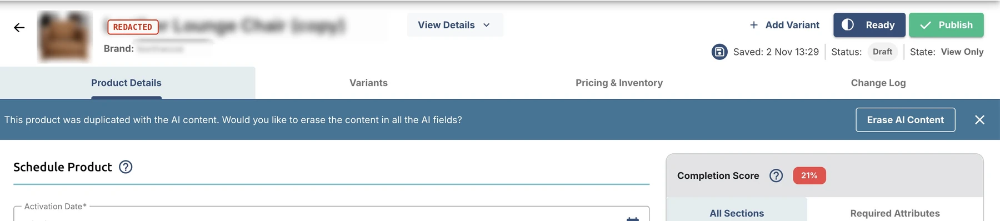

THE CASE OF THE COPIED AI CONTENT
Part two of File 01: what happened when the AI-assisted fields met the way operators actually work.
- INDUSTRY
- E-commerce · B2B SaaS
- ROLE
- Lead Product DesignerDesigned the AI generation feature, then the fix after the feedback session.
- TEAM
- 1 junior designer · PO · CTO/CMO · 3 developers · in-house AI team
EACH FIELD GENERATES ITS OWN.
- →One generate action per AI field: draft, thumbs feedback, extra instructions, Generate again, Keep.
- →Guardrails: if the field already has text, Keep warns that it will be replaced; a hint asks for more product details, such as images.
- →AI generation dependency: AI can only generate content if it has at least a product title. For that, the product title was already at the top of the form and was required. Without it, the user can’t really move on to other fields.
UX FEEDBACK SESSION
ONE BUTTON IS ALL IT TOOK.
Instead of clearing copied AI text field by field, operators get one button at the top of the form, Erase AI Content, that clears every AI field at once.

It works under three conditions
The banner appears only on a draft that was copied with AI content, so live products are never touched.
One click clears every AI field at once, so regeneration starts clean.
Dismiss the banner when the copied content is close enough to keep.
6–8 CLICKS → 1.
So the time goes into the new product, not into undoing the old one.
THE CONSTRAINT
the list couldn’t knowThe list had no way of knowing which fields held AI content until the product was opened.
RULED OUTOnce the product is open, the form knows which fields hold AI content, so one button can clear them all.
Caught by talking it through with the developers.
Study the whole workflow, not just the relevant steps. We designed for new products; operators almost always duplicated.